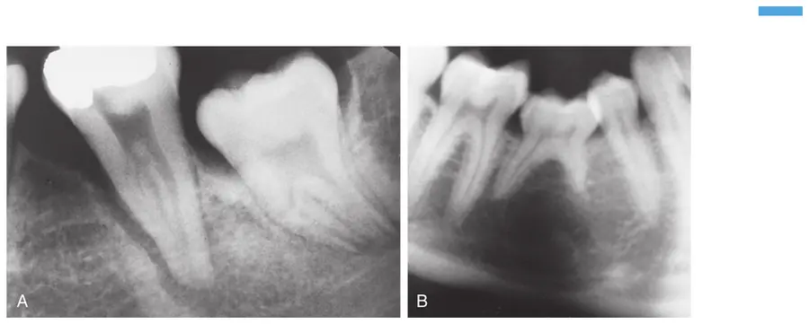
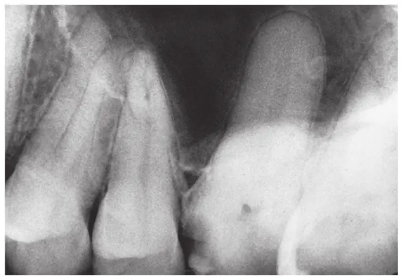

نسخه استخراجشده؛ ترجمه یا تأیید علمی انجام نشده است. وضعیت: captured
پیش از هر چیز یک قاعدهی پایه: در دندان کاملاً رویشیافته، تاج از پیش «از استخوان بیرون آمده» — پس کشیدن دندان یعنی کشیدن ریشه. هر بار این را فراموش کنی و نیرو را روی تاج بگذاری، تاج یا ریشه میشکند یا استخوان اطراف ریشه خرد میشود.

و کشیدن درست زور نمیخواهد، ظرافت میخواهد. دندان از استخوان کشیده نمیشود؛ با نیروی کنترلشده بهآرامی بلند میشود. اگر پیشبینی کردی سختی کار بالاست یا تلاش اولیه همین را نشان داد، سراغ رویکرد جراحی حسابشده برو، نه نیروی بیشتر.
اندیکاسیونها — و یادت باشد اینها فقط راهنما هستند، نه قانون مطلق:
کنترااندیکاسیونها هم مثل اندیکاسیونها نسبیاند؛ گاهی با احتیاط یا درمان اضافه قابل عبورند و گاهی چنان جدی که بدون تمهید ویژه نباید کشید. دو دستهاند: سیستمیک و موضعی.

و یک استثنای مهم که برعکسِ حدس اولیه است — آبسهی حاد دنتوآلوئولار: مطالعات آیندهنگر متعدد بهروشنی نشان دادهاند سریعترین فروکش عفونتِ ناشی از نکروز پالپ وقتی است که دندان هرچه زودتر کشیده شود. پس عفونت حاد کنترااندیکاسیون کشیدن نیست. اما ممکن است کشیدن سخت باشد: تریسموس دهان را نمیگذارد باز شود، یا رسیدن به بیحسی عمیق دشوار است. اگر دسترسی و بیحسی فراهم شد، همان لحظه بکش؛ وگرنه آنتیبیوتیک شروع کن و کشیدن را در اولین فرصت برنامهریزی کن.